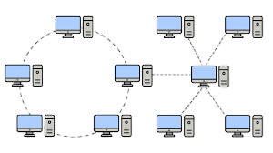

¿Qué es una topologia Hibrida?
Una topología híbrida es una arquitectura de red que combina dos o más tipos de topologías de red, como estrella, anillo o bus, para crear una estructura más compleja y eficiente.
Su propósito es aprovechar las fortalezas de cada topología individual y minimizar sus debilidades, lo que resulta en una red más flexible, escalable y tolerante a fallos.
Un ejemplo común es la topología estrella-bus, donde múltiples redes en estrella se conectan mediante una red en bus.

CARACTERISTICAS
- Combinación de topologías:Une dos o más topologías de red (como estrella, bus, anillo o malla) en una sola red.
- Flexibilidad y escalabilidad: Permite crear diseños de red complejos y escalables adaptados a necesidades específicas.
Ejemplos comúnes de la unión de topologias para formar una topologias hibridas
- Estrella-bus: Varias redes en estrella conectadas a un bus central.
- Estrella-anillo: Varias redes en estrella conectadas a través de un anillo.
Ventajas y Desventajas de la Topología de Estrella
Ventajas
- Flexibilidad: Se adapta a las necesidades específicas de diferentes partes de una red, combinando las ventajas de otras topologías.
- Escalabilidad: Es más fácil expandirla según crecen las necesidades de la organización, ya que la estructura puede ser adaptada y ampliada.
- Confiabilidad y tolerancia a fallos:Si un segmento de la red falla, el resto de la red puede continuar funcionando sin interrupción.
- Facilidad de gestión: Puede ser más fácil de gestionar si la red está segmentada por departamentos o funciones, cada uno con su propia configuración adecuada.
- Posibilidad de optimizar el rendimiento:Permite combinar distintas topologías para aprovechar las fortalezas de cada una, como la intensidad de la señal o la velocidad.
Desventajas
- Complejidad:La configuración y el diseño son complejos, ya que requieren la combinación de múltiples arquitecturas de red.
- Alto costo: La implementación es costosa debido al cableado, el equipo especializado necesario y la complejidad de la administración.
- Mantenimiento costoso: Requiere más experiencia y conocimientos técnicos para la administración y el mantenimiento, lo que puede hacer que el soporte sea más caro.
- Dificultad en la solución de problemas: La complejidad del diseño dificulta la detección y reparación de fallos.